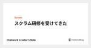

Chatwork Creator's Note のフィード

スクラム研修を受けてきた 1
1
Chatwork Creator's Note
お久しぶりです。かとじゅん(@j5ik2o)です。 今回、会社の業務時間を使ってScrum Allianceの研修をいくつか受けてきたので、感想を簡単にまとめてみたいと思います*1。 *1:講義内容に...
14日前

半年でPHPのエラー通知を撲殺しまくった話
Chatwork Creator's Note
どうも。ご存じ、サーバーサイド開発部（PHP)のやまざきです。 『優れた UX は心地のよい Developer Experience から生まれてくる』と信じて20余年。今年は最高な年になりそうです...
2ヶ月前
VPNの侵害事例と認識のアップデート
Chatwork Creator's Note
プロダクトセキュリティ部の西川（id:cw-nishikawa）です。 この前、息子と映画を観に行ったら観客は私たちしかいませんでした。うれしいと同時に心配になりますね。 さてさて、セキュリティの社内...
2ヶ月前
Chatwork 中長期プロダクト構想について
Chatwork Creator's Note
メリークリスマス♩id:cw-kasugaです。 この記事は、Calendar for Chatwork | Advent Calendar 2021 - Qiita の25日目の記事です。 Adve...
3ヶ月前
複雑化するデザイナーの役割や職域の整理とキャリアパスについて考えてみた
Chatwork Creator's Note
はじめまして、2021年7月にジョインしましたプロダクトデザイン部マネージャーのmotty（Yukiko Motegi - Wantedly Profile）です。東京から福岡へUターン移住したため、...
3ヶ月前
フロントエンド開発部で LT ハッカソンを開催しました！
Chatwork Creator's Note
こんにちは、西口です。Chatwork フロントエンド開発チームでスクラムマスターをしています。 先日のブラックフライデーセールでワインを買い込み、年越し準備は万端整いました。 この記事は Chatw...
3ヶ月前
Chatwork WebのUIに1つ1つ丁寧に名付けをしている話（ユビキタス言語検討会について）
Chatwork Creator's Note
まだ心は11月! 2021年が終わってしまうのが信じられないフロントエンド開発部のすずきゆき(id:s12bt)です。 これはChatwork Advent Calendar 2021の22日目の記事...
3ヶ月前
PHP開発現場でスクラムっぽいことをやってきた話
Chatwork Creator's Note
自己紹介 どうも、やまざき＠サーバーサイド開発部でございます。ご無沙汰しております。 Chatwork社員の中でちょっとだけ自転車が好きっぽい社員のうちの１人です。 自転車部員にとっては当然ではござい...
3ヶ月前
フロントエンド開発部の業務を紹介します
Chatwork Creator's Note
こんにちは。フロントエンド開発部の佐山です。 最近Chatworkに興味を持ってくれた方の中で、Creator’s Noteの記事を見ました！と言っていただける方が増えているようなので、フロントエンド...
3ヶ月前
オブジェクトとかモデル、ドメインについてのデザイナーの解釈
Chatwork Creator's Note
突然寒いですね。まだ衣替えを終えていない、プロダクトデザイン部の守谷（emi moriya (@emim) | Twitter）です。 この記事は、Chatwork Advent Calendar 2...
3ヶ月前
Swift Concurrencyのここがスゴイ
Chatwork Creator's Note
この記事はChatwork AdventCalendar 2021の18日目の記事です。 モバイルアプリケーション開発部の池田(Twitter: m_ike)です。普段はiOS担当でSwiftを書いて...
3ヶ月前
脆弱性管理ツール「yamory」を導入しました！
Chatwork Creator's Note
こんにちは、プロダクトセキュリティ部の新沼（cw-niinuma）です。 年末になると世の中が慌ただしくなっていく雰囲気が、わくわくするのは子供の頃から変わりません。 この記事はChatwork Ad...
3ヶ月前
モバイルアプリ開発チームをプラットフォーム横断で分割した話
Chatwork Creator's Note
こんにちは。モバイルアプリケーション開発部の福井(Twitter: tinpay)です。この記事はChatwork Advent Calendar 2021の16日目の記事となります。 最近はオフィス...
3ヶ月前
アジャイル開発におけるスケジュールを継続的に見直す
Chatwork Creator's Note
こんにちは。都志（@louvre2489）です。 これは Chatwork Advent Calendar 15日目のエントリです。 Chatworkではアジャイルを前提に開発を行っています。プロジェ...
3ヶ月前
漫画フラジャイルから見たプロダクトセキュリティ
Chatwork Creator's Note
プロダクトセキュリティ部の西川（id:cw-nishikawa）です うちの猫の名前は「ほろ」と「まみ」です。 この記事はChatwork Advent Calendar 2021の14日目の記事です...
3ヶ月前
Chatworkに入社してから３ヶ月の間に感じたこと
Chatwork Creator's Note
この記事は Chatwork AdventCalendar 2021 10 日目の記事です。 qiita.com 8 月から Chatwork のフロントエンド開発部にjoinさせて頂きました、林 で...
3ヶ月前
Akka Actors を便利につかう
Chatwork Creator's Note
Chatwork アドベントカレンダー および Scala アドベントカレンダー の 9 日目の記事です。(盛大に遅刻しました 🙇♂️ ) こんにちは。hayasshi です。 サーバーサイド開発...
3ヶ月前
モバイルアプリケーション開発部で１泊２日の部署合宿をしたって話
Chatwork Creator's Note
こんにちは〜。Chatwork モバイルアプリケーション開発部(モバアプ部)新卒の若林です！！ 私は現在モバアプ部iOS担当の新卒として、日々優しい先輩に囲まれながらお仕事をさせてもらってます！（言わ...
3ヶ月前
人事とエンジニアがワンチームなDevHRについての紹介
Chatwork Creator's Note
こんにちは。きのこの山でもたけのこの里でもなく、パイの実が好きな田中佑樹（Twitter: @tan_yuki）です。 プロダクト本部というところで副本部長をしています。 この記事はChatwork ...
4ヶ月前
プロダクトオーナーをやっている
Chatwork Creator's Note
こんにちは。藤井 @yoshiyoshifujii です。 当記事は、 Chatwork Advent Calendar 2021 6日目です🎅 🦌 🎄 🎂 2021年4月から、とあるスクラム...
4ヶ月前
エンジニア採用広報をはじめてみて「実際どうだった？」という一年の振り返り
Chatwork Creator's Note
さて、本日より Chatwork プロダクト本部メンバーによる Advent Calendar がはじまります 📅🎄 初日は、エンジニア採用広報である高瀬 (@Guvalif) が、 「エンジニア...
4ヶ月前
インシデント対応演習のススメ
Chatwork Creator's Note
プロダクトセキュリティ部の西川（id:cw-nishikawa）です。 好きな言葉は「sounds good」です。 先日、Chatworkのプロダクトセキュリティ部内でインシデント対応演習（机上）を...
5ヶ月前
【GASで業務効率化】GoogleドライブにPDFファイルが追加されたらChatworkへ通知する
Chatwork Creator's Note
こんにちは、Chatworkのさかぐち（cw-sakaguchi）です。 「Google Apps Script」を利用して「業務効率化」する手順を不定期に更新しております。 最近、FAXとGoogl...
6ヶ月前
EKSのバージョンライフサイクルに組織として対応する
Chatwork Creator's Note
先日行われた Chatwork Dev Day 2021 で、SRE部からは Immutable Clusterに対する定期Version Upgrade戦略 ということで、EKSのアップグレードへの...
8ヶ月前
プロダクトセキュリティ部で働く
Chatwork Creator's Note
プロダクト本部プロダクトセキュリティ部に2021年6月に中途で入社したばかりの西川（id: cw-nishikawa）と申します。 押し付けるセキュリティではなく、寄り添うセキュリティをモットーとして...
9ヶ月前
ChatworkにおけるScrum@Scale導入への挑戦
Chatwork Creator's Note
こんにちは、id:daiksy です。 今回はぼくがChatworkで取り組んでいるスケーリングスクラムについて書いてみようと思います。 先日開催された Chatwork DevDayでもお話したので...
9ヶ月前
Jetpack Composeでチャット一覧を作る
Chatwork Creator's Note
はじめに はじめまして、入社して半年が経ちましたモバイルアプリケーション開発部のmatsubaです。 今回はAndroidのUIを構築するための最新のツールキットであるJetpack Composeの...
10ヶ月前
メンション履歴を保存するツールを作った話
Chatwork Creator's Note
こんにちは、あらい＠料金プランチームです。最近自作キーボードに入門しました。この記事も左右に割れるカッコいいキーボード(※日本語配列) "JP60Split" で書いています。 この記事はChatwo...
10ヶ月前
Redux入門 〜iOSアプリをReduxで作ってみた〜
Chatwork Creator's Note
こんにちは！モバイルアプリケーション開発部のiOSエンジニア、折田 (@orimomo)です。 Chatworkに入社して早一年…。時が経つのがあっという間ですね。 最近は社内でアーキテクチャ刷新の話...
10ヶ月前
Chatworkフロントエンドが品質を保つために行なっているモブレビューについてのお話
Chatwork Creator's Note
こんにちは！フロントエンド開発部の石山です！ フロントエンド開発部では、スケールしやすいアプリケーションを目指して日々改善を行なっています。 今回はコードの品質を高めるためにフロントエンドチームが行な...
10ヶ月前